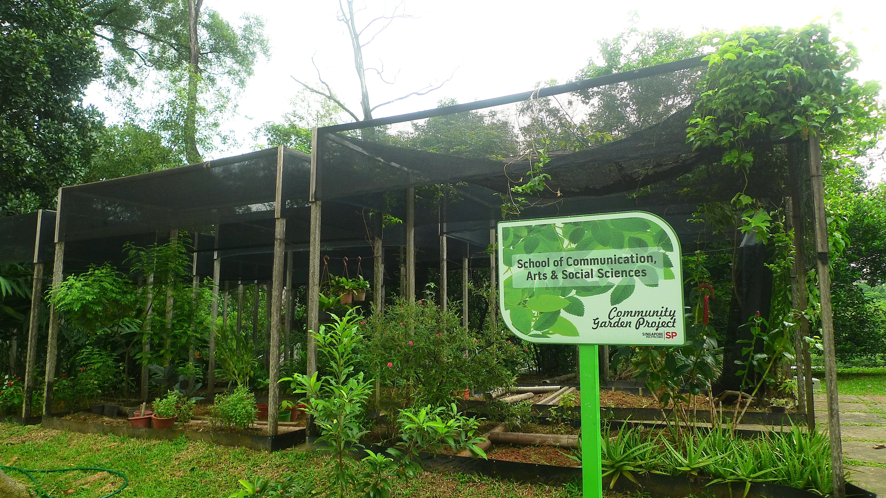

Green Campus

SP has taken steps to create a greener campus environment. It has implemented eco-friendly infrastructure, such as the installation of solar panels on rooftops, rainwater harvesting systems, and energy-efficient lighting systems.
Recycling and Waste Management

The polytechnic has a comprehensive waste management system in place. It promotes recycling by providing recycling bins across the campus and encourages students and staff to segregate their waste properly. SP also organizes recycling campaigns and educational programs to raise awareness about waste reduction and recycling.
Sustainable Transportation

SP encourages sustainable transportation methods among its community. It provides bicycle parking facilities and promotes cycling as an alternative mode of transport. The polytechnic also organizes carpooling initiatives to reduce the number of vehicles on campus.